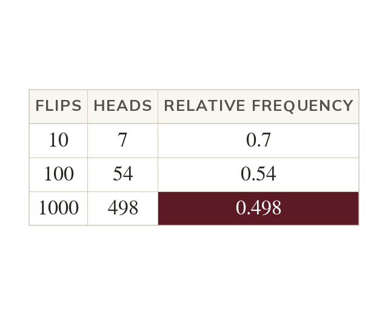
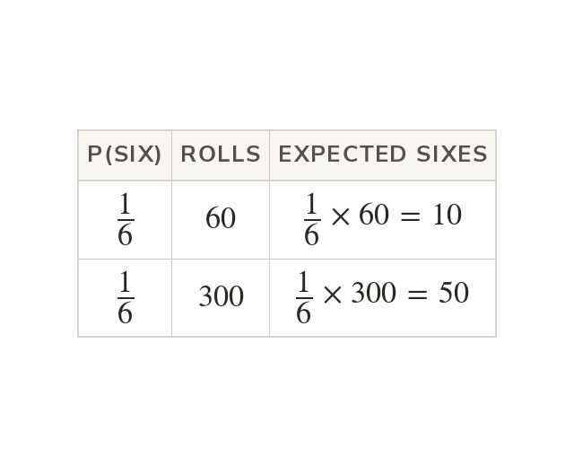
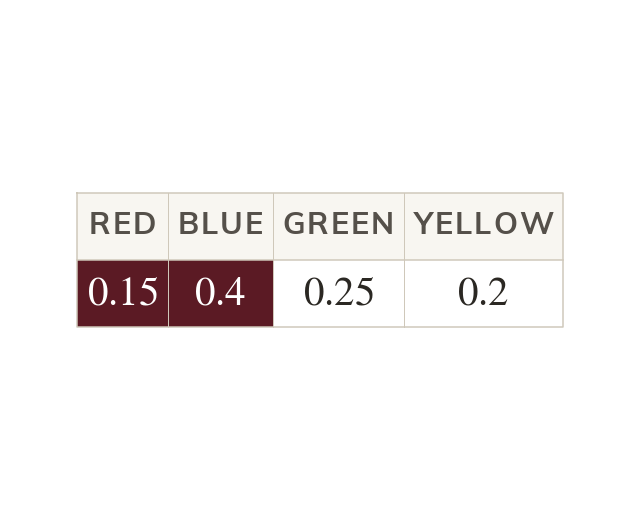
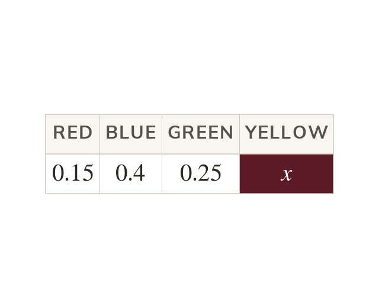
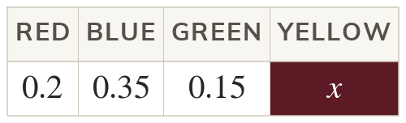
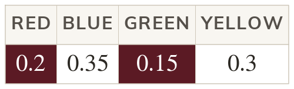

More trials, better estimates
Relative frequency is the number of times an event happens over the number of trials. It estimates the probability, and more trials usually give a better estimate.
When the outcomes are not equally likely, such as a drawing pin landing point up, an experiment estimates the probability. Today we estimate probabilities from data and predict how often events happen.
Work down the page at your own pace. Write every answer in your book first, then click to check it.
Read each card, then follow the worked examples one step at a time.

Relative frequency is the number of times an event happens over the number of trials. It estimates the probability, and more trials usually give a better estimate.

Expected frequency is the probability times the number of trials. It is how often the event should happen on average, not a guarantee.
Pick an answer. If it's wrong, the feedback tells you which mistake it was.
Read each card, then follow the worked examples one step at a time.

Mutually exclusive events cannot happen at the same time. For these, or So P(red or blue)

The probabilities of all the outcomes add up to
A missing probability is minus the sum of the others.


Pick an answer. If it's wrong, the feedback tells you which mistake it was.
For each skill, tap the one that is true for you today. Your Revise pages start with anything you mark Not yet.
Your ratings are saved on this device only.
Log in, then search for a code to practise that skill.